一、2005年前：蛮荒时代与投研范式起源
课程开篇先回顾上节课的上证指数、万得全A两张季K线图：对历次牛市顶部做了红色标注（2013年创业板牛市在上证上不明显），对2004、2014、2024年三次"国九条"做了蓝色标注——前两次国九条后都出现大级别牛市，2024年第三次国九条以来，万得全A已逼近历史新高。
1.1 2005年是A股的"1500年"
- 《全球通史》上册从史前到1500年、跨万年仅500多页；下册从1500年至今、几百年却近千页——因航海时代到来、科技进步加快。2005年之于A股，正如1500年之于世界
- 1990-2005年是A股"蛮荒时代"：规则残缺、摸着石头过河，根本制度缺陷是股权分置——上市公司同时存在流通股与非流通股，大股东持非流通股、利益与股价无关，中小股东没有话语权
- A股成立之初是"国有企业解困的工具"；早期甚至有"交易所办错了、关了就可以"的说法，1993年前后曾关闭海南证券交易中心
1.2 1999年"519行情"：政策+科技牛
- 1999年5月8日炸南联盟大使馆，全国悲愤、市场恐惧，大盘跌至1000点附近；5月16日政府紧急发出"六条救市政策"，5月19日强行拉涨，兼具稳市场与对冲外部屈辱、提振信心之意
- 六条措施（内部传达、后被外媒曝光）：给券商合法借钱渠道、允许增资扩股发债、让国企和上市公司的钱（"三类企业"）入市——是建国后第一次最高层明确救市；主线是科技网络与重组股，"触网就涨"，是纳斯达克科技牛在中国的映射
1.3 美国互联网泡沫：五根稻草压垮
- 1999-2001年美股凡名称带".com/.net"就暴涨；最终被五根稻草压垮：加息锁流动性、估值离谱、盈利被大面积证伪、龙头爆雷、经济衰退
- 世通公司2002年爆110亿美元财务造假后退市；亚马逊从107美元跌至6美元（-94%）、雅虎从118美元跌至4美元（-97%）
- 1999年6月至2000年5月，美国连续6次加息、联邦基金利率从4.75%升至6.5%；1999年克林顿废除《格拉斯-斯蒂格尔法案》（1933银行法）、颁布金融服务现代化法案，允许银证保混业，为2008年危机埋下伏笔
- A股被美股带崩，2001-2005年持续4年大熊市，2005年跌至998点、极度悲观
1.4 投研范式的确立
- 股权分置改革：2005年4月29日启动，尚福林讲"开弓没有回头箭"；非流通股股东以支付对价（送股、送现金，即补偿）换取流通权，实现全流通、同股同权同价，使全体股东利益一致，为注册制、创业板、科创板、纳入MSCI等扫清根本障碍
- 人民币汇改：2005年7月由盯住美元改为盯住一篮子货币，人民币升值、吸引外资
- 卖方（券商）：2003年首届"新财富最佳分析师"评选，让研究规范化、职业化；研报从"口号+观点"变为"数据模型、逻辑、估值、风险提示"的标准格式。此后又有水晶球奖、金牛奖、万得金牌分析师奖等
- 买方：公募基金始于1998年（多为封闭式），2003年后大量设立对标美国共同基金的公募；QFII（合格境外投资者）进入，用国际方法研究A股
- 君安研究所：1995年成立、最早推行基本面与实地调研，被视为现代卖方研究开创者；1999年与国泰合并为国泰君安研究所、规模近百人。所长李迅雷2000年《让客户改变我们的研究模式》重构了卖方商业模式（基本面调研、盈利预测、分佣付费、路演服务，沿用至今）；2006年初《买自己买不起的东西》提出城镇化+人口红利+货币超发下，一线城市房产、茅台等核心资产将走长牛
二、周期研究源头：周金涛与康波
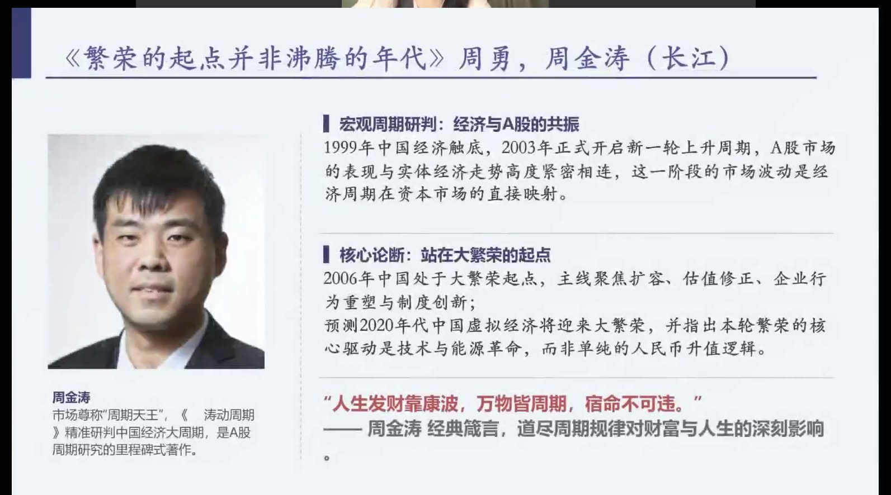
2005年6月见底998点后开启超级大牛市，最高涨至6124点，市值、开户数、机构规模爆发性增长。2005-2007年是难以复制的周期牛市，"得宏观者得天下"。
- 2005-2007年很多子行业从低点到高点达10倍涨幅，个股达20-30倍：证券行业整体涨约27倍、有色约14倍、工程机械约14倍、房地产约11倍、煤炭约10倍；个股中国船舶约41倍、驰宏锌锗约38倍（高送转+高分红）
- 2006年长江证券周勇、周金涛发表《繁荣的起点并非沸腾的年代》。周金涛是《涛动周期》作者、后任中信建投策略首席
周金涛用康波、朱格拉、基钦等四种周期嵌套分析，判断2006年中国只是大繁荣的起点，预测2020年中国虚拟经济将迎来大繁荣，并指出本轮繁荣核心是技术与能源革命，而非单纯人民币升值逻辑——"人生发财靠康波"。周金涛于2016年去世。
三、2007年6124点：国内机构观点
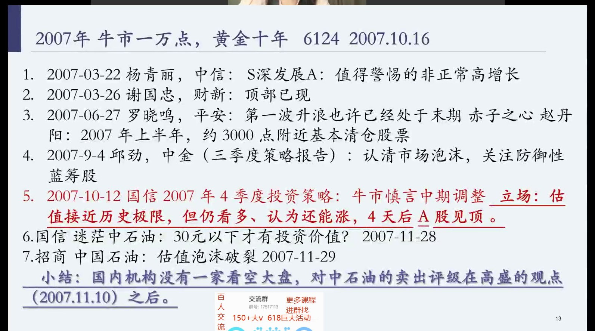
2007年市场一度流行"牛市上万点、黄金十年"，最终于2007年10月16日止步6124点。2008年要办北京奥运会，全国基本都在唱多。国内机构观点时间线：
- 3月22日：中信证券杨青丽（五道口毕业）对深发展出看空报告
- 3月26日：财新网谢国忠（永远看空）发文"顶部已现"，被骂很惨
- 6月27日：平安证券罗晓鸣称"第一波升浪已处末期"；早期私募赤子之心赵丹阳在3000点附近基本清仓
- 9月4日：中金邱劲三季度策略《认清市场泡沫，关注防御性蓝筹》
- 10月12日：国信证券四季度策略称"估值接近历史极限"但仍看多——4天后A股见顶
- 11月28/29日：招商、国信分别对中石油发看空报告
小结：国内机构在大牛市顶端没有一家看空大盘；对中石油的卖出评级，也是在高盛（2007.11.10）之后才发出。
四、6124点：外资研报与见顶
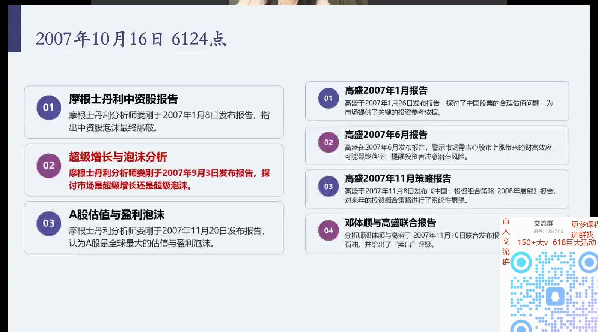
- 摩根士丹利娄刚（中国人）：2007年1月、9月、11月连续看空，报告包括《中资股泡沫最终爆破》《超级增长与泡沫分析》《A股是全球最大估值盈利泡沫》
- 高盛邓体顺：2007年1月（合理估值）、6月（警示财富效应落空）、11月做出看空报告；11月8日《中国：投资组合策略2008年展望》，并与高盛11月10日联合报告给中石油"卖出"评级
主讲人主张"兼听则明"：资本市场是人性的放大器、最不听话，内资外资、看多空观点都应了解，不应因"珍惜生命、远离高盛"之类说法就排斥某一类报告。
五、2008至暗时刻：政策剧烈转向
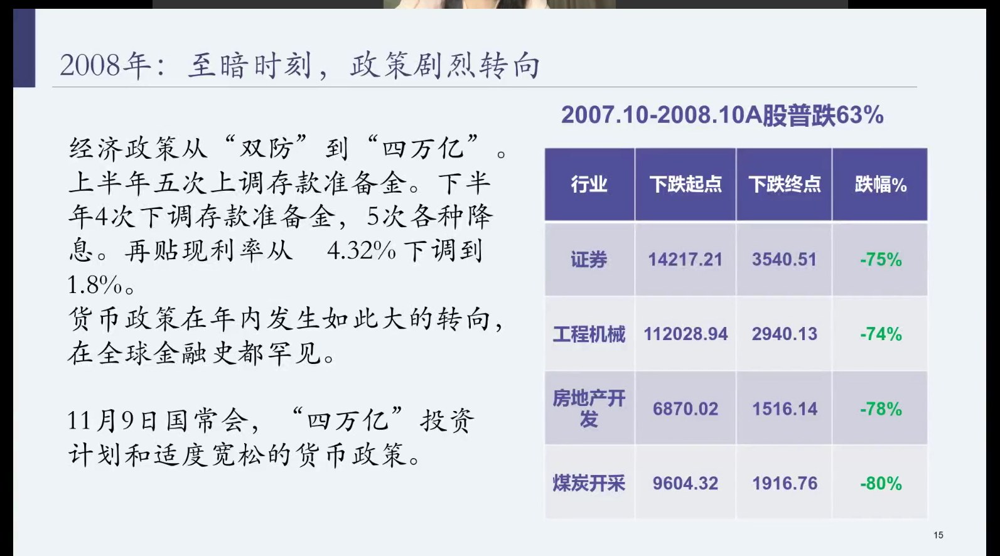
5.1 政策从"双防"到"四万亿"
- 2008年上半年仍在防通胀、防经济过热；9月15日雷曼兄弟破产，次贷危机升级为全球系统性金融危机，股市暴跌、信用冻结
- 9月后财政政策转向：上半年5次上调存准，下半年4次降准、5次降息，再贴现率从4.32%降至1.8%——货币政策年内如此重大转向，在全球金融史上罕见
- 11月9日国常会推出四万亿投资计划与适度宽松货币政策
- 2007.10-2008.10市场普跌约63%：证券约-75%、工程机械约-74%、房地产开发约-78%、煤炭开采约-80%
5.2 市场表现与核心转变
- 上证指数从6000多点回到1000多点；万得全A全年跌约63%、80%个股跌幅超50%；全部A股归母净利润增速约-16%，滚动PE跌约71%（杀估值）
- 全球没有一个板块有绝对收益，仅电气设备、生物医药、农林牧渔跌幅未超50%
- 各国都选择货币宽松、财政兜底、债务置换"拖着泡沫和坏账"，而非让市场破产出清——全球经济从"需求驱动"转向"货币+债务驱动"，这是2008年作为分水岭的核心意义
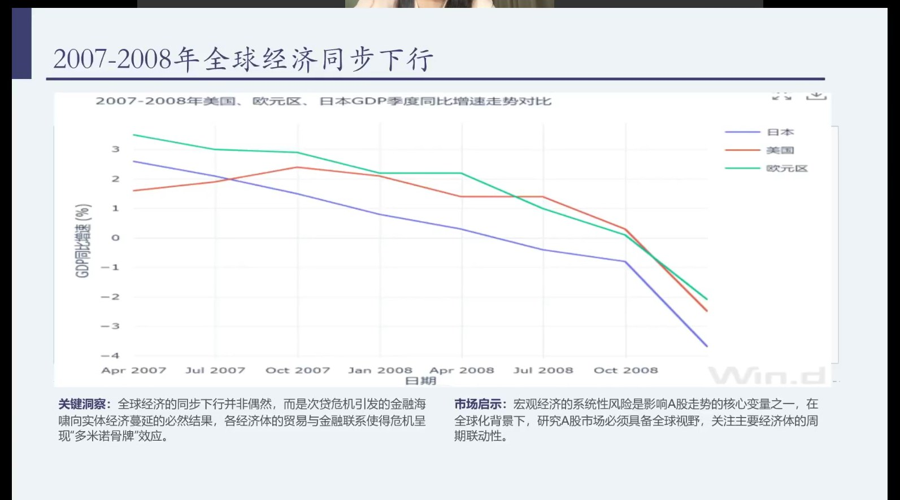
5.3 全球同步下行
- 2008年四季度美、欧元区、日本全部衰退，三大经济体GDP增速同步急速下行（日本韧性最差、衰退幅度最大）；中国出口断崖式下滑
- PPI从2008年8月的+10.01%（十几年新高）到12月的-1.1%，三个月从新高到通缩；2009年7月跌至-8.2%
- 这种"共振式衰退"打破了此前"东方不亮西方亮"的互补格局，标志实体经济受到系统性冲击，是A股深度调整的重要外部推手
六、投资者结构：谁在接盘谁在减持
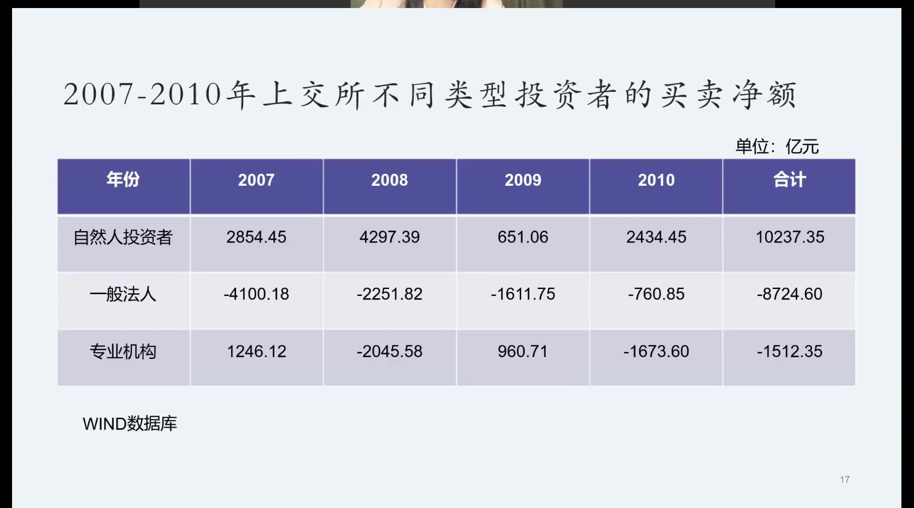
2007-2010年（数据自2007年开始发布）上交所三类投资者买卖净额（亿元）呈现截然不同的景象：
- 自然人：2007-2010每年都净买入（2854/4297/651/2434，合计约+10237亿）——不断"接盘"
- 一般法人：每年都净卖出（合计约-8725亿）——股改限售、IPO限售、增发限售解禁带来巨大减持压力，产业投资者减持是重要关注点
- 专业机构：牛市买入、熊市卖出（合计约-1512亿）——随机应变
七、2009年V型反转与时代转换
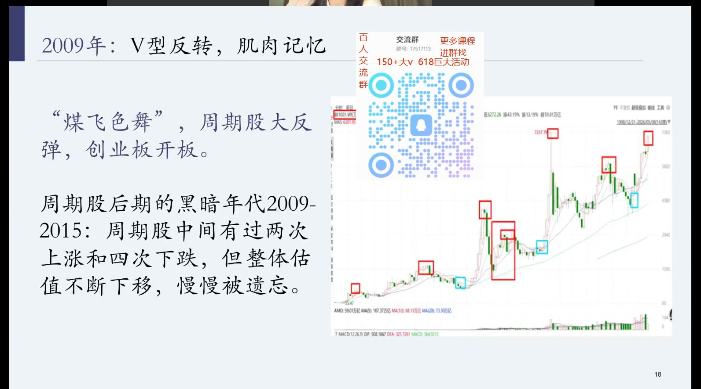
- 2009年后进入"货币托底、债务驱动"模式，全球放水、主要发达国家开始逆全球化；中国四万亿让经济强反弹，股市跟随反弹——这是2008年热门周期股"肌肉记忆式"的反弹
- 2009年四万亿落地、基建地产成主力，M2增速长期大幅跑赢GDP；上证综指全年涨约80%；2009年10月创业板开板、首批28家上市（谋划10年后落地）
- 2009年8月是分水岭：之前周期股占优，之后消费股崛起，与家电下乡、汽车下乡有关——汽车板块涨约241%（全市场第一）、家电涨约154%（第四）
这不是短期切换，而是一个时代的转换：此后周期股在2009-2015年间两次上涨、四次下跌，估值不断下移、被遗忘；A股进入"成长制胜"阶段。
八、2009年的两次误判
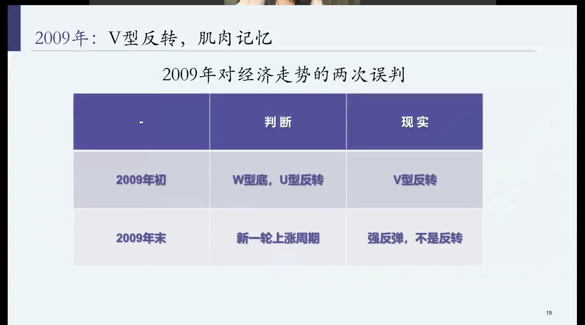
- 年初误判：以为是W型底（长时间、两次见底）或U型反转，现实是各项经济数据快速、强劲反弹（V型）
- 年末误判：以为经济V型反转、将迎来新的上涨，现实只是一次V型的强反弹，随后转入结构分化
九、周期为王：M1择时体系与见顶K线
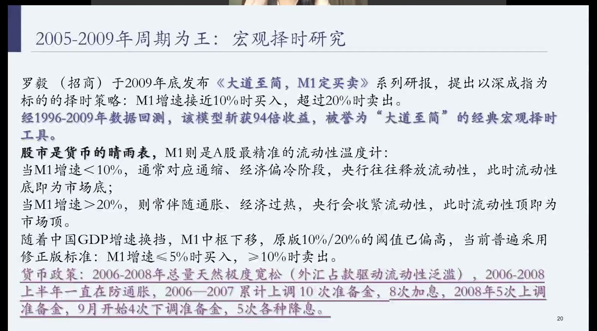
9.1 罗毅《大道至简 M1定买卖》
- 招商证券银行业首席罗毅2009年发布《大道至简 M1定买卖》，以深成指为标的：M1增速接近10%时买入、超过20%时卖出；1996-2009年回测获得约94倍收益，被誉为经典宏观择时工具
- 逻辑：股市是货币的晴雨表（而非经济晴雨表）。M1<10%对应通缩、央行放水，流动性底即市场底；M1>20%伴随过热、央行收缩，流动性顶即市场顶
- GDP换挡后M1中枢下移，修正版阈值减半：M1<5%买入、>10%卖出；天风证券用 M1−PPI 代表流向金融市场的钱（PPI代表进入实体的钱）
- 2006-2007年累计升准10次、加息8次；2008年先5次升准、后4次降准5次降息
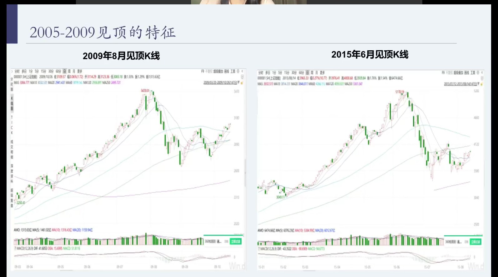
9.2 见顶K线特征与规律失效
- 2009年8月与2015年6月见顶模式高度相似：缓涨→斜率陡峭→突发巨阴→小阳回收→再巨阴、资金出逃
- 技术逃顶一旦被广泛学会就会失效：博弈中有人抢跑（"预判别人的预判"），原有规律被打破、策略拥挤——每种规律都可能失效
十、2015杠杆牛的灭亡
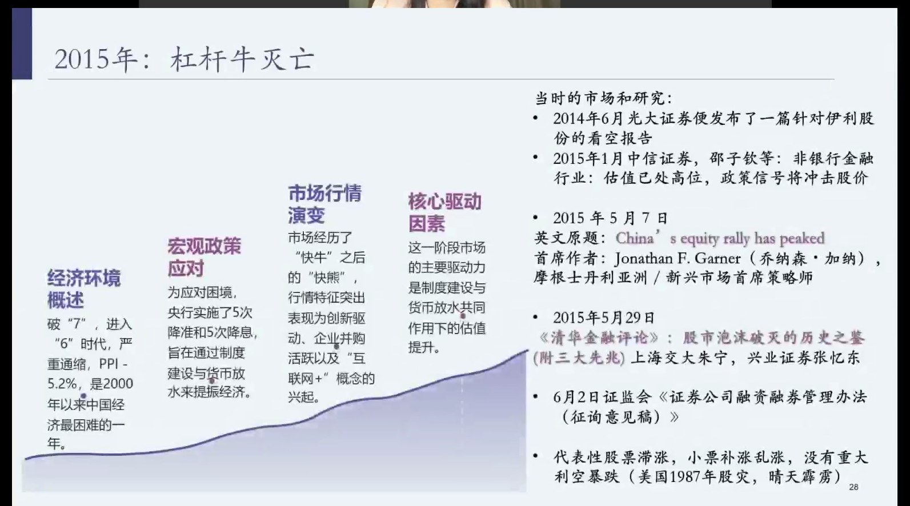
- 2015年传统经济没有拿得出手的数据：规上工业利润增速约-3%、GDP破6、PPI约-5.2%（2000年以来最困难）；货币政策明显宽松（5次降准、5次降息），驱动力是制度建设+货币放水下的估值提升，特征为创新驱动、并购活跃、"互联网+"兴起
- 华泰联合开创"投行+并购基金+过桥融资"模式；华泰研究员3月发表《重构的三次方，我们迎来最好的时代》（以狄更斯《双城记》开篇）
- 5月7日摩根士丹利新兴市场首席乔纳森·加纳发表"中国股市已见顶"（equity rally has peaked）；5月13日证监会叫停跨界定增
- 5月29日《清华金融评论》发《股市泡沫破灭的历史之鉴》（朱宁撰文+张忆东总结三大征兆：市梦率炒作、杠杆泛滥、情绪狂热与产业资本出逃）；6月2日证监会发布两融管理办法征求意见稿，资金收紧，6月10日开始大跌；7月清理伞形信托、场外配资、恒生HOMS系统；8月汇改、人民币贬值，经历第三轮暴跌
- 2015年初至6月牛股：银之杰约70倍、东方财富约50倍、乐视网约48倍、金证股份约40倍、同花顺约35倍，多与移动互联、小票相关
见顶前迹象：代表性龙头开始滞涨、小票乱涨，"像去山顶拍毕业照"——大股票先上去、小股票再上去，最后连ST都补涨。这与美国1987年"晴天霹雳"式股灾、以及2021年新能源见顶有相似之处。
十一、2010-2015成长主线与风格指数
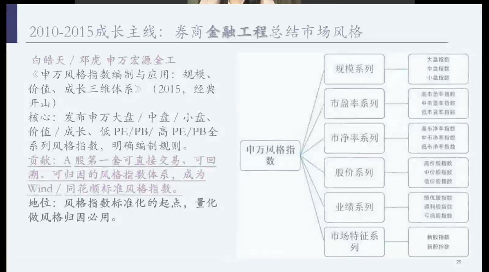
11.1 2010-2014年新旧交接
- 2010年央行收紧（6次提准、2次加息），叠加欧债危机，A股全年微跌、排名全球倒数第三；3月底两融试点启动（关注度低，2014年底达2万亿，为2015杠杆牛埋下伏笔）
- 消费成长开启十年牛市但有反复：2011年成长股"倒春寒"大跌，此后每次下跌都让消费成长更强
- 微观基础：白酒盈利从一线向二线扩散；医药受益新医改（医保覆盖率从不足60%升至95%以上）；电子因智能手机渗透率提升、具备消费属性而持续高估值——苹果链产生立讯精密约50倍、歌尔声学约30倍、欧菲光约20倍、长电科技约15倍
- 2011年7次提准、3次加息，GDP破8；2012年指数止跌但经济最快阶段已过，周期股此后彻底沦为配角；2013年清理影子银行导致钱荒，A股走向极致分化（此前同涨同跌、此后结构行情）
- 2014年上半年小盘股火热、主板横盘（茅台仅1000亿市值，白马股最便宜时点是2014年7月前后）；11月21日降准降息后蓝筹逆袭，上证全年涨53.3%
11.2 申万风格指数与策略哲学
- 2015年申万白皓天、邓虎发布系列风格指数，建立A股第一套可交易、可回溯、可归因的风格指数体系，成为风格归因必用
- 2014年国泰君安黄燕明、乔永远《在存在认知和符号的世界寻找投资机会》（"三朵花"：树上的花=盈利/不重要、纸上的花=财报、心里的花=预期共识/核心），被视为卖方策略哲学天花板
- 2012年申万林鹏、陈杰《宽体策论》："A股是预期驱动、不是盈利驱动"；《A股篮球论》："Showtime选仓位、垃圾时间把握结构"——是对A股弱势有效市场的刻画
十二、2017漂亮50
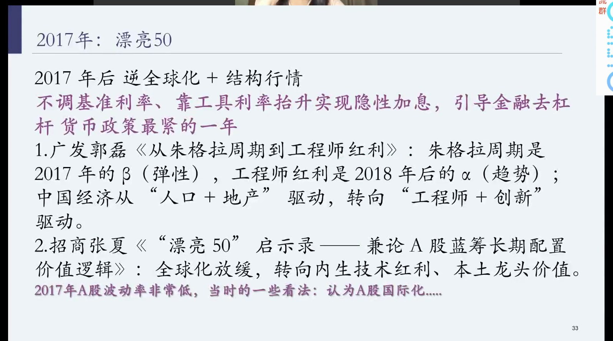
- 2017年引导金融去杠杆，是货币最紧的一年：不调基准利率、靠公开市场利率抬升实现"隐形加息"
- 广发郭磊《从朱格拉周期到工程师红利》：朱格拉周期是2017年的贝塔（弹性），工程师红利是2018年后的阿尔法（趋势），经济从人口+地产驱动转向工程师+创新驱动
- 招商张夏《漂亮50启示录》：全球放缓、转向内生技术红利下的本土龙头价值；2017年A股波动率极低（当时被解读为国际化，2018年波动率又回升）
- 2017年是"垃圾时间把握结构"，只是结构落在蓝筹上，所以貌似牛市
十三、2018贸易争端与去杠杆
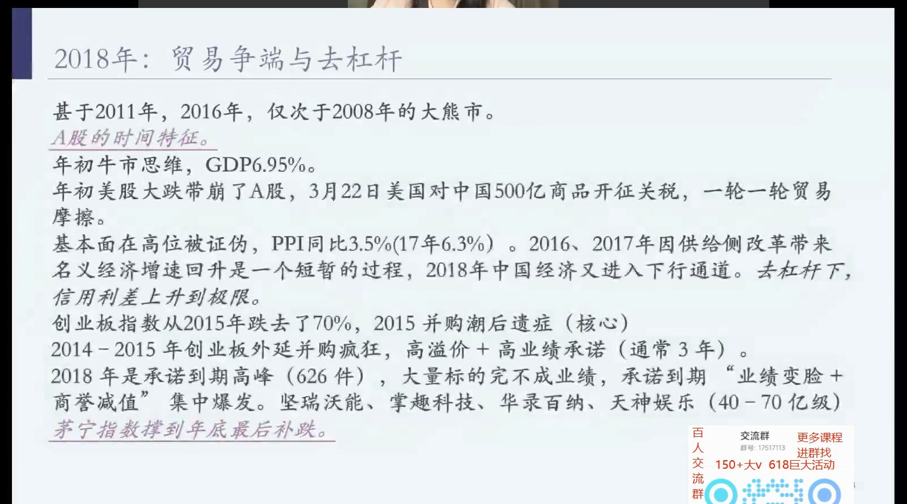
- 时间特征：1998、2008、2018均为熊市；2018年初仍是牛市思维（GDP 6.95%），美股大跌带崩A股；3月22日美国对500亿商品加征关税，贸易摩擦开启；PPI从2017年6.3%降至3.5%，基本面高位证伪
- 去杠杆下信用利差升至极限，P2P、小贷抽血；创业板指从2015年高点跌去约70%
- 并购后遗症集中爆发：2014-2015年高溢价+业绩承诺（对赌，通常3年），2018年是对赌到期高峰（约626件），业绩变脸+商誉减值，坚瑞沃能、掌趣科技、华录百纳、天神娱乐等爆雷
- 茅指数、宁组合撑到年底才补跌——全民崇拜的资产，涨时涨得多、跌时跌得少
十四、2019科创板与消费科技牛
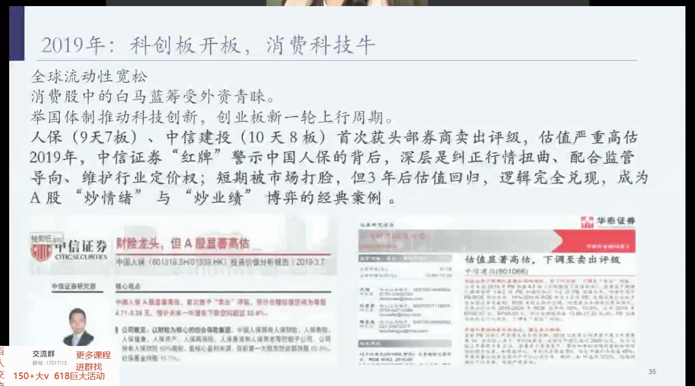
- 2019年科创板开板、全球流动性转松（美联储预防性降息），QFII额度创新高、外资流入青睐白马蓝筹；创业板跌70%后开启新周期
- 离谱行情：人保9天7板、中信建投10天8板；2019年3月首次出现头部券商卖出评级——中信证券"红牌"警示中国人保、华泰看空中信建投
- 这是蓝筹疯牛初期基本面派与情绪派的正面硬刚，有配合监管导向、维护行业定价权的意味；一只股票没有任何研报覆盖，往往是被看空但无人愿写看空报告
- 成长扩散路径：2019年茅指数封神（传统消费金融龙头+自主可控科技龙头加入），2020年宁王独立（新能源光伏、CXO、疫苗），宁组合成为主力
十五、2020新冠放水：货币成第一变量
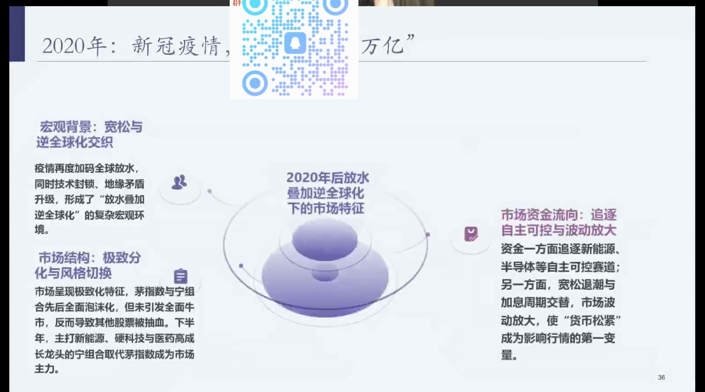
- 2020年疫情加码、全球放水，同时技术封锁、地缘矛盾升级，形成"放水+逆全球化"的复杂环境；市场极致化，茅指数、宁组合泡沫化，反而抽血其他股票
- 下半年主打新能源硬科技、医药成长的宁组合取代茅指数成为主力；2020年之后，货币松紧成为影响行情的第一变量
十六、2021通胀、核心资产见顶与北交所
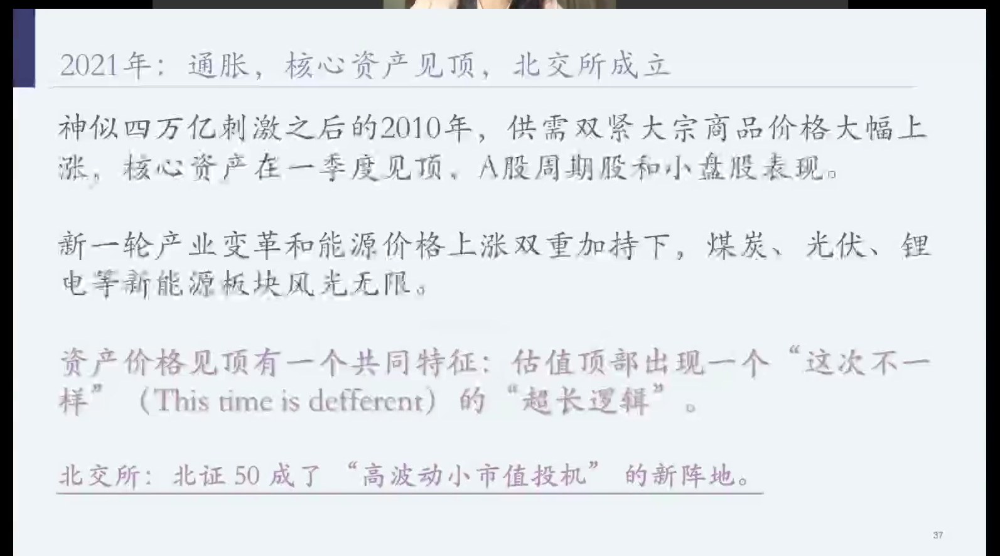
- 2021年神似2010年：供需双紧、大宗大涨，核心资产一季度见顶；煤炭、光伏、锂电等新能源风光无限
- 资产见顶共同特征：估值顶部出现"这次不一样（This time is different）"的超长逻辑——银行股的永续成长、智能手机半导体的自主可控、新能源的能源革命
- 2021年成立北交所，北证50成为高波动、小市值投机新阵地（老阵地是ST）
- 寻找泡沫征兆三角度：企业盈利恶化（利润、ROE拐头）、货币收紧（连续加息、增速下滑）、IPO大增与资金供求失衡
十七、2022灰犀牛与黑天鹅
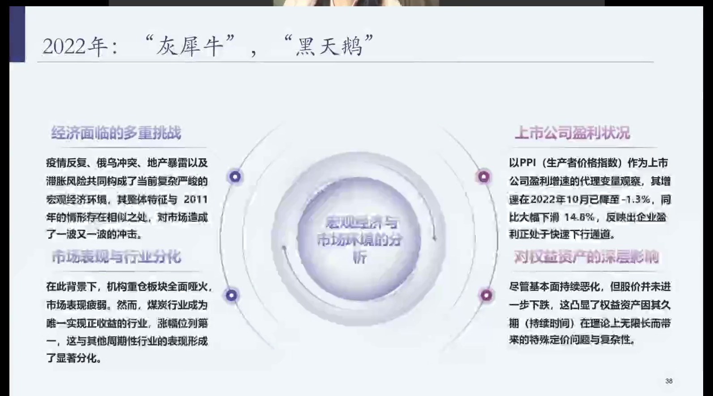
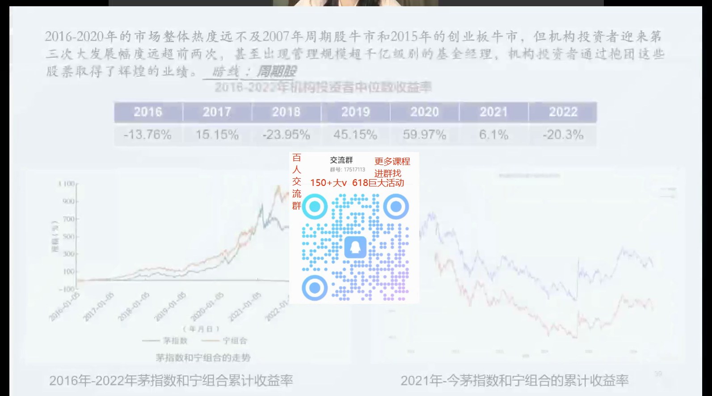
- 2022年PPI转负（10月约-1.3%），煤炭是唯一正收益板块；"权益久期"概念流行
- 机构历年收益率：2016约-13.76%、2017约15.15%、2018约-23.95%、2019约45.15%、2020约59.97%、2021约6.1%、2022约-20.3%
- 2016-2020年茅指数约+688%、宁组合约+672%，同期沪深300仅约37%、创业板约6.8%
- 市场暗线是周期股时不时回归：2016年工程机械（三一重工）、2020年集运（中远海控）、2021年煤炭（中国神华）
十八、2023哑铃风格与三篇研报
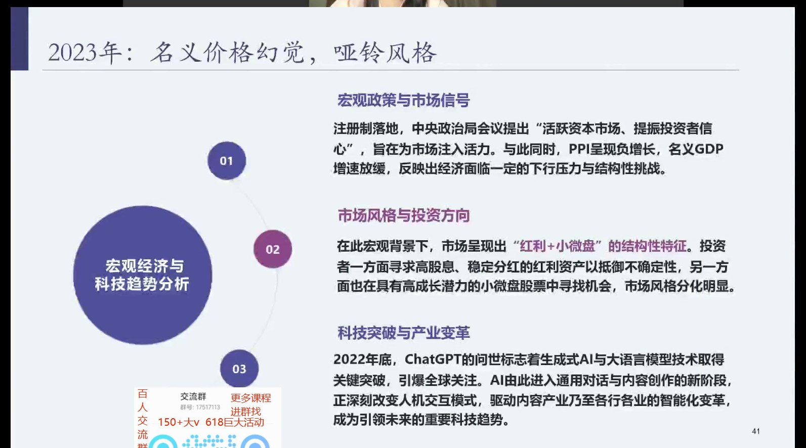
18.1 哑铃风格
- 2023年首次提出"新质生产力"、全面注册制落地；GDP增长5.2%、PPI负增长；市场呈"红利+小微盘"哑铃结构（高股息红利+高成长小微盘），仍是结构行情
- 2022年底ChatGPT问世，标志生成式AI、大语言模型关键突破
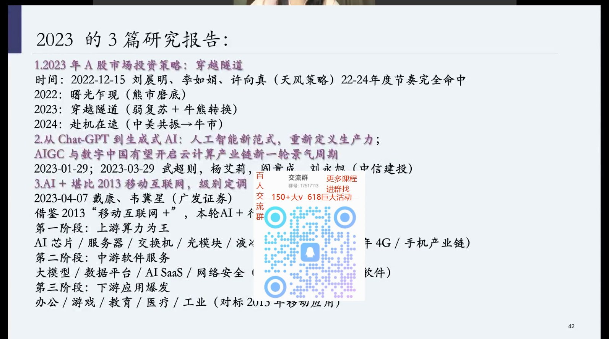
18.2 三篇经典研报
- 天风刘晨明、李如娟、许向真《穿越隧道》（2023年度策略）：2022熊市摸底、2023穿越隧道（弱复苏+牛熊转换）、2024中美共振牛市，22-24节奏完全命中；刘晨明后去广发
- 中信建投武超则、杨艾莉、阎贵成、刘永旭《从Chat-GPT到生成式AI》（2023-01-29）：AIGC与数字中国开启云计算景气周期
- 广发戴康、韦冀星《AI+堪比2013移动互联网级别定调》（2023-04-07）：三阶段——上游算力为王、中游软件服务、下游应用爆发
18.3 2024-2026主线复盘
- 2024：价值搭台、成长唱戏，高股息打底、AI算力（光模块、服务器）主攻
- 2025：AI算力硬件绝对主线，延伸工业机器人、自动驾驶
- 2026上半年：算力业绩牛+经济复苏牛，科技（AI、半导体、军工、商业航天）+能源（核电、储能、电网、能源出海）双向驱动
十九、顶点规律：政策信号与经济信号
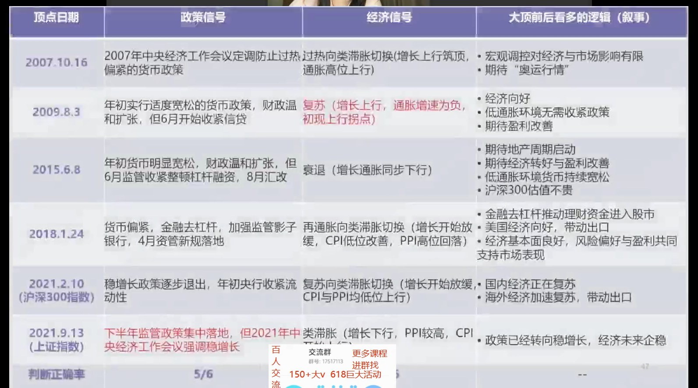
再次归纳历次牛市顶部，从政策、经济两类信号看，判断错误处标红：两种信号准确率均为 5/6。
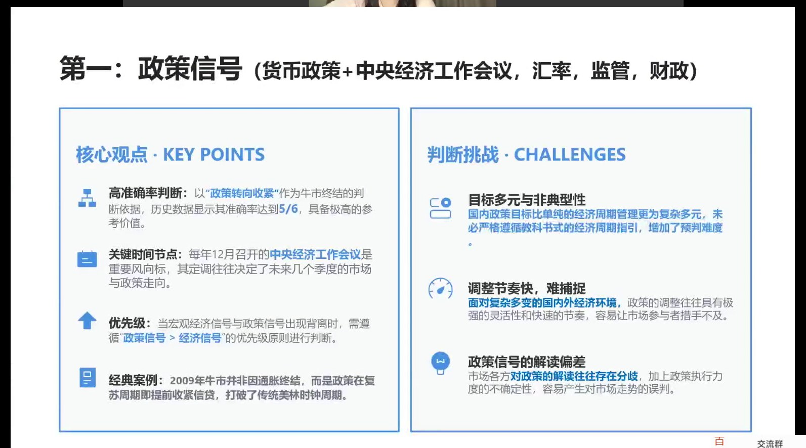
19.1 政策信号
- 以政策转向收紧作为牛市终结依据；2009年牛市并非因通胀结束，而是政策在复苏周期提前收紧信贷，打破美林时钟
- 政策涵盖货币政策、中央经济工作会议、汇改、汇率、监管、财政政策；难点是国内政策目标比单纯经济周期管理更复杂，难严格遵照教科书
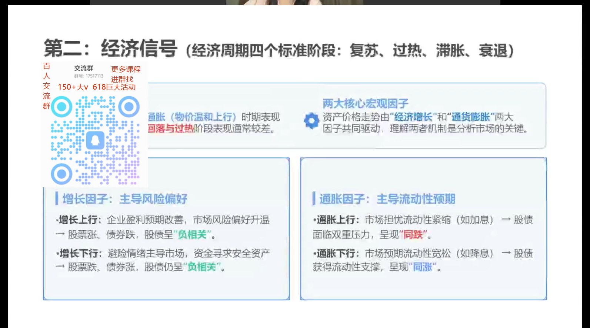
19.2 经济信号（美林时钟两大因子）
- 盯经济增长（充分就业）与通货膨胀两大因子：经济上行股涨债跌、下行股跌债涨；通胀走高预期加息、股债同跌，通胀走低预期降息、股债同涨
- 复苏、温和通胀环境市场表现较好，滞胀、过热、回落阶段承压；中国因国内外复杂变量会打破美林时钟，不能机械套用
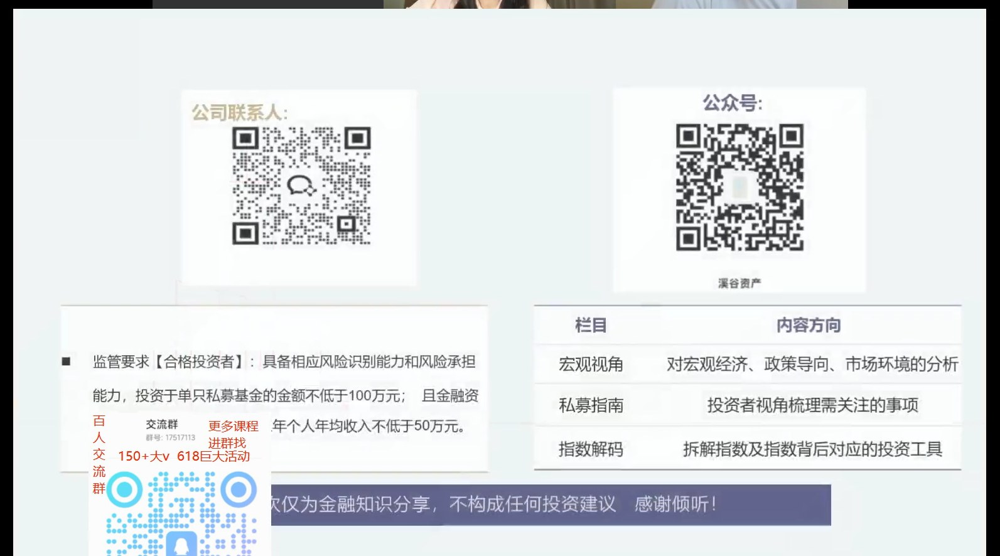
结尾附西谷资产合规提示：私募基金仅向合格投资者募集（个人金融资产≥300万或近3年年均收入≥50万，单只私募投资门槛≥100万）；课程内容仅为历史梳理与教学，不构成投资建议。